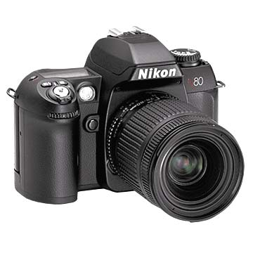

Técnico superior en imagen
Ciclo Superior
En este ciclo superior aprenderás a: definir y obtener imágenes fijas o móviles, en cualquier soporte y formato, por medios fotográficos, cinematográficos o videográficos,iluminar espacios escénicos, determinando y controlando la calidad técnica formal y expresiva, filmar o grabar productos audiovisuales y a realizar la administración, gestión y comercialización en una pequeña empresa.

- Imagen fotográfica
- Aplicaciones fotográficas
- Iluminación de espacios escénicos
- Imagen audiovisual
- Gestión de calidad de procesado y tratamiento fotográfico y cinematográfico
- Administración, gestión y comercialización en la pequeña empresa
- Medios fotográficos y audiovisuales
- Medios y lenguajes de comunicación visual
- Relaciones en el Entorno de Trabajo
- Formación y Orientación Laboral
- Formación en Centros de Trabajo (F.C.T.)
Puestos de trabajo más relavantes:
- Técnico en cámara de video, televisión y cine
- Técnico en iluminación de cine, video, televisión y espectáculos
- Técnico en imagen